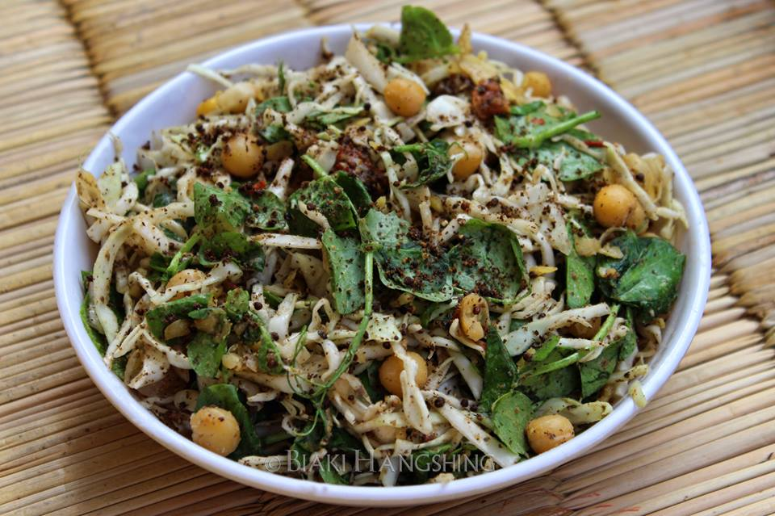

Singju (Manipuri Salad)

This is a healthy salad that is very popular in Manipur and is made from a variety of vegetables with fermented fish and black sesame. This carries a unique taste added by chickpea powder.
Ingredients To Make Singju:
- ½ small cabbage
- Few pea tips
- ½ cup dried white pea
- 1 tsp perilla seeds (black sesame)
- 1 tbsp chick pea powder
- 5 fermented fish
- 1 king chilli
- Salt as per taste
Steps To Make Sinju:
- Soak the dried peas overnight and boil them in the morning.
- Clean and wash cabbage and pea tips and cut them. Keep them aside.
- Take a pan and roast the sesame seeds. Take them off the flame and grind them once they are cooled off.
- In the same pan, dry roast the chick pea powder till it turns aromatic and light brown in color.
- On low flame start roasting the fermented fish.
- Once it is roasted then grind with warm water and keep aside.
- Roast the king chili as well and grind it to a paste.
- Now in a bowl, take all the ingredients and spices and mix them well.
- Add fermented fish as well and coat it with vegetables and spices.
The Sinju is now ready to serve and eat.
Home